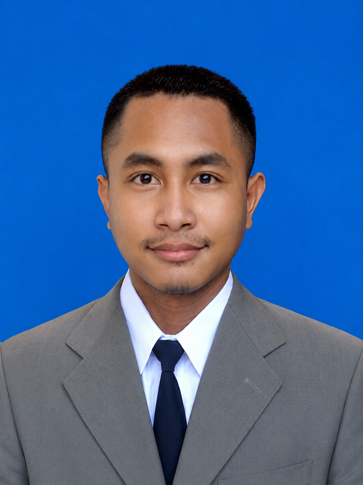
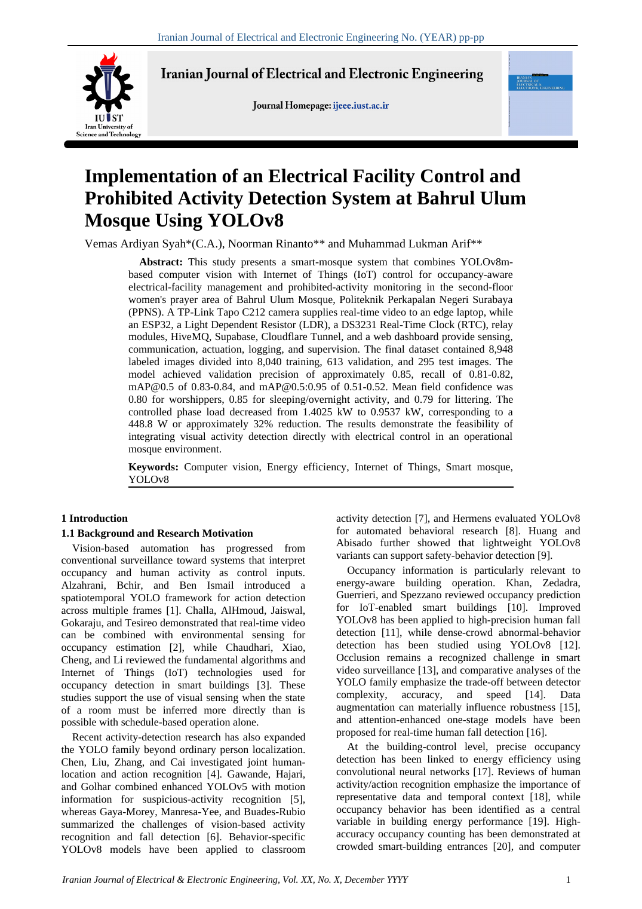
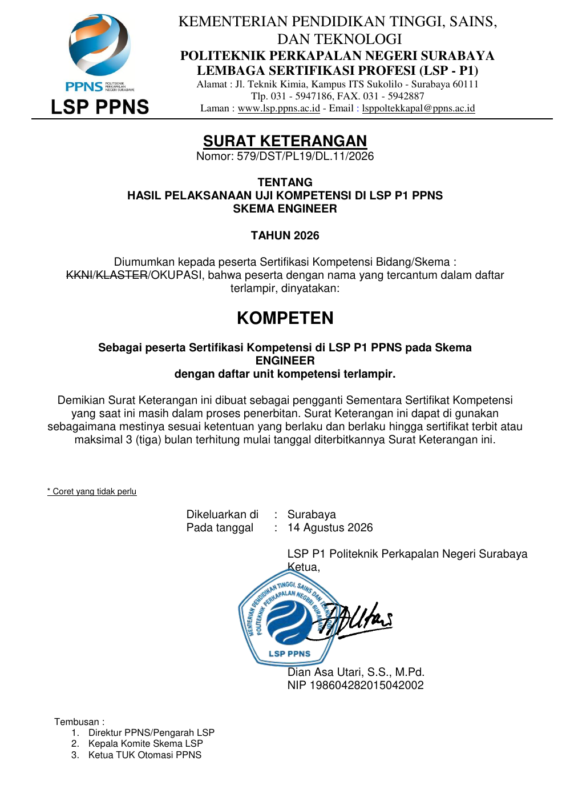

OPEN TO APPLIED AI / COMPUTER VISION / AIoT
Vemas Ardiyan Syah
0AI Dataset Images
0.83–0.84mAP@0.5
~32%Load Reduction

COMPUTER VISION
AIoT
AUTOMATION
aiot_pipeline.py
frame = camera.read()
objects = yolo.detect(frame)
event = decision(objects, sensor)
mqtt.publish(event)
esp32.actuate(event)
dashboard.stream(event)01ABOUT / PROFILE
Automation background.
AI-first problem solving.
“Saya paling tertarik pada teknologi yang tidak berhenti di model atau dashboard, tetapi benar-benar terhubung ke kondisi lapangan dan menghasilkan keputusan yang bisa dieksekusi.”
Sense→Understand→Decide→Act→Measure
02SELECTED TRACK RECORD
From research to field work.
Latest → earliest.
03TECHNICAL CAPABILITY
Built around integration,
not isolated tools.
CCTV / SENSOR→AI / PYTHON→MQTT / DATABASE→ESP32 / CONTROL→DASHBOARD / ACTUATOR
04RESEARCH / CREDENTIALS
Evidence behind
the engineering claims.

UNDER REVIEW / 2026
IJEEE — IUST, Iran
Implementation of an Electrical Facility Control and Prohibited Activity Detection System at Bahrul Ulum Mosque Using YOLOv8.
View research details →
COMPETENT
Engineer Scheme — LSP P1 PPNS
Sertifikasi kompetensi Skema Engineer dengan unit otomasi, SCADA, commissioning, electrical system, dan industrial automation.
05LEADERSHIP
Technical depth,
human coordination.
LET'S BUILD SOMETHING USEFULOpen to Applied AI,
Open to Applied AI,
Computer Vision & AIoT opportunities.
Terbuka untuk role yang mempertemukan AI, software, embedded system, IoT, automation, dan problem industri nyata.